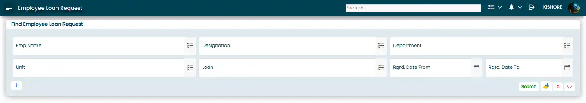
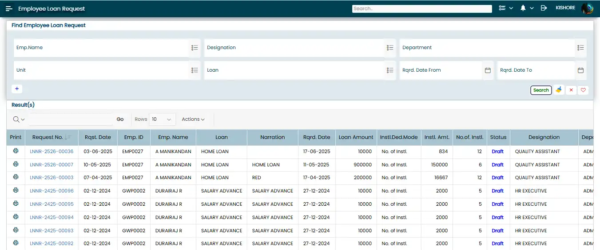
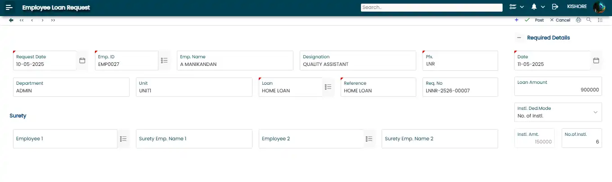

<div data-category="Payroll" data-title="Employee Loan Request" data-updated="December 01, 2025" data-contributors="RoadmapIT" data-breadcrumb="Home,Payroll,Employee Loan Request">
  <div class="page-content">
    <p>"Employee Loan Request" feature is designed to manage and streamline the process of requesting, approving, and managing employee loans</p>
    <h5>Navigation path:</h5>
    <p class="fs-6">Payroll \ Transaction \ Emp. Loan \ Employee Loan Request</p>
    <!-- Employee Loan Request -->
    <h2>Employee Loan Request</h2>
    
    <ul style="list-style-type: none; align-content: center">
      <li class="mouse-icon">Search screen displays the list of Loan Request with the relevant details.</li>
      <li class="mouse-icon">Click on search to filter all the records.</li>
    </ul>
    
    <ul style="list-style-type: none; align-content: center">
      <li class="mouse-icon">User can filter the respective documents by entering the search parameters at the header.</li>
      <li class="mouse-icon">Using search, system displays the results relevant to the search parameters entered.</li>
      <li class="mouse-icon">On-click, the corresponding transaction record will be displayed.</li>
      <li class="mouse-icon">
        Using
        
        icon, entered search parameters can be cleared.
      </li>
      <li class="mouse-icon">
        To close the screen, use
        <i class="bi bi-x fs-4 mx-2 text-danger"></i>
        icon.
      </li>
      <li class="mouse-icon">
        By clicking the
        <i class="bi bi-plus fs-4 mx-2 text-primary"></i>
        Add button user can create a new document.
      </li>
    </ul>
    
    <ul style="list-style-type: none; align-content: center">
      <li class="mouse-icon">Enter Request Date.</li>
      <li class="mouse-icon">Select Emp ID.</li>
      <li class="mouse-icon">Select the Loan.</li>
      <li class="mouse-icon">Enter the Reference.</li>
      <li class="mouse-icon">In the Required details, enter the Loan Amount and date.</li>
      <li class="mouse-icon">Select the Instl Ded. Mode and enter the necessary details.</li>
      <li class="mouse-icon">If needed, add surety employees.</li>
      <li class="mouse-icon">
        Click
        <i class="bi bi-check-lg fs-4 mx-1 text-success"></i>
        to save.
      </li>
      <li class="mouse-icon">Click Post button and the document can be forwarded for approval.</li>
    </ul>
  </div>
</div>
